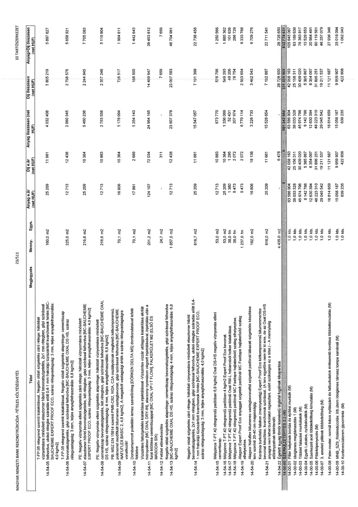

| Tétel | Megjegyzés | Menny. | Egys. | Anyag e.ár (net HUF) | Díj e.ár (net HUF) | Anyag összesen (net HUF) | Díj összesen (net HUF) | Anyag+Díj összesen (net HUF) |
|---|---|---|---|---|---|---|---|---|
| T-FP 05 rétegrend szerinti kialakítással: Negatív oldali szigetelés: alsó réteg: hálódali vízszintes és függőleges felületen 2 rétegben, össz. 2x1 mm rétegvastagságban, szórással felhordva, utolsó réteg szárítása előtt 0,4-1 mm frakciójú tűziszárított kvarchomok hintés (MC-BAUCHEMIE EXPERT PROOF ECO, száraz rétegvastagság: 3 mm, teljes anyagfelhasználás: 4,0 kg/m2) | NaN | 160.0 | m2 | 25 209 | 11 661 | 4 033 408 | 1 865 219 | 5 898 627 |
| 14-54-07 réteggel megegyező szigetelési záró rétege: hátoldali szigetelésre: cementiszap bevonatszigetelés, gépi szórással felhordva (MC-BAUCHEMIE OXAL DS HS, száraz rétegvastagság: 3 mm, teljes anyagfelhasználás: 6,8 kg/m2) | NaN | 225.0 | m2 | 12 713 | 12 438 | 2 860 345 | 2 798 576 | 5 658 921 |
| Negatív oldali szigetelés alaprétege: hátoldali vízszintes és függőleges felületen 2 rétegben, össz. 2x1 mm rétegvastagságban, szórással felhordva (MC-BAUCHEMIE EXPERT PROOF ECO, száraz rétegvastagság: 3 mm, teljes anyagfelhasználás: 4,0 kg/m2) | NaN | 216.6 | m2 | 25 209 | 10 364 | 5 460 238 | 2 244 845 | 7 705 083 |
| 14-54-07 réteggel megegyező szigetelési záró rétege: hátoldali szigetelésre: cementiszap bevonatszigetelés, két rétegben, gépi szórással felhordva (MC-BAUCHEMIE OXAL DS HS, száraz rétegvastagság: 3 mm, teljes anyagfelhasználás: 6,8 kg/m2) | NaN | 216.6 | m2 | 12 713 | 10 883 | 2 753 638 | 2 357 246 | 5 110 884 |
| Negatív oldali szigetelés alaprétege: hátoldali vízszintes és függőleges felületen 2 rétegben, össz. 2x1 mm rétegvastagságban, szórással felhordva (MC-BAUCHEMIE EXPERT PROOF ECO, száraz rétegvastagság: 3 mm, teljes anyagfelhasználás: 4,0 kg/m2) | NaN | 70.1 | m2 | 16 806 | 10 364 | 1 178 094 | 726 517 | 1 904 611 |
| 14-54-08 réteggel megegyező szigetelési záró rétege: hátoldali szigetelésre: cementiszap bevonatszigetelés, két rétegben, gépi szórással felhordva (MC-BAUCHEMIE OXAL DS HS, száraz rétegvastagság: 3 mm, teljes anyagfelhasználás: 6,8 kg/m2) | NaN | 70.1 | m2 | 17 891 | 2 689 | 1 254 143 | 188 500 | 1 442 643 |
| Vízszintes falszigetelés kialakítása: injektálással-Vízszintes vízzáró utólagos kialakítása akrilát hidro-polimer (MC OXAL DRY-IN), alacsony nyomáson végzett injektálással, injektálás után a furatok lezárása cementiszappal (MC OXAL VP IT FLOW). FALKERÜLET M2 (ELSŐ ÉS MÁSODIK SÍK) | NaN | 201.2 | m2 | 124 107 | 72 034 | 24 964 145 | 14 489 647 | 39 453 812 |
| Felület előnedvesítés | NaN | 24.7 | m2 | 0 | 311 | 0 | 7 659 | 7 659 |
| Negatív oldali szigetelés alaprétege: cementiszap bevonatszigetelés, gépi szórással felhordva (MC-BAUCHEMIE OXAL DS HS, száraz rétegvastagság: 4 mm, teljes anyagfelhasználás: 6,8 kg/m2) | NaN | 1857.0 | m2 | 12 713 | 12 438 | 23 607 578 | 23 097 583 | 46 704 981 |
| Mélypince T-P1.42 rétegrendi padlón 6,8 kg/m2 Oxal DS HS negatív víznyomás elleni bevonat. | NaN | 616.7 | m2 | 25 209 | 11 661 | 15 547 057 | 7 191 399 | 22 738 456 |
| Mélypince T-P1.42 rétegrendi padlón 4 kg/m2 Expert Proof Eco bevonat. | NaN | 53.0 | m2 | 12 713 | 10 883 | 673 770 | 576 796 | 1 250 566 |
| Mélypince T-P1.42 rétegrendi padlónál RM-L habarcsos holker kialakítása. | NaN | 53.0 | m2 | 25 209 | 10 364 | 1 336 069 | 549 293 | 1 885 362 |
| Mélypince T-P1.42 rétegrendi padlónál MC Fajtapere sajtoláshoz szalag elhelyezése. | NaN | 38.0 | fm | 1 380 | 1 295 | 52 431 | 49 205 | 101 636 |
| Mélypince T-P1.42 rétegrendi padlónál MC Fajtapere sajtoláshoz holker szalag elhelyezése. | NaN | 38.0 | fm | 5 473 | 2 072 | 207 974 | 78 754 | 286 729 |
| Alagsor Expert Proof Eco anyaggal szigetelt padlónál MC Fajtapere sajtoláshoz holker szalag elhelyezése. | NaN | 1237.0 | fm | 5 473 | 2 072 | 6 770 114 | 2 563 654 | 9 333 768 |
| Alagsor Nefutex bitumenes vastagbevonattal szigetelt padlónál lábazati szigetelés készítése terv szerinti 20-40 cm magasságig. | NaN | 192.0 | m2 | 16 806 | 18 138 | 3 226 733 | 3 482 543 | 6 709 276 |
| Kerámia burkolatú falakon (mennyezetig) Expert Proof Eco kétkomponensű bitumenmentes bevonat készítése, kvarchomok szórással. (A terv egységesen nem tér ki erre, de az Oxal DS-HS helyett bitumenmentes bevonatot kell ragasztani, ezért szükséges ez a tétel). - A mennyiség előirányzatnak tekintendő. | NaN | 616.0 | m2 | 25 209 | 11 661 | 15 528 854 | 7 182 687 | 22 711 541 |
| Égetett agyag tömör kisméretű téglából fugák kíkaparása | NaN | 4435.0 | m2 | 0 | 6 478 | 0 | 28 728 660 | 28 728 660 |
| SZERKEZETÉPÍTÉS 2.2 (M) | NaN | NaN | NaN | 0 | 0 | 501 242 666 | 331 535 965 | 832 778 631 |
| Pillér helyének bontás és építési munkák (M) | NaN | 1.0 | kts. | 63 506 034 | 42 268 153 | 63 506 034 | 42 268 153 | 105 774 187 |
| Betonbontások (M) | NaN | 1.0 | kts. | 38 033 328 | 25 156 311 | 38 033 328 | 25 156 311 | 63 189 639 |
| Többlet falazási munkálatok (M) | NaN | 1.0 | kts. | 45 974 798 | 30 409 020 | 45 974 798 | 30 409 020 | 76 383 817 |
| Egyéb Lakatos, nyílászáró váltók (M) | NaN | 1.0 | kts. | 8 142 786 | 5 385 867 | 8 142 786 | 5 385 867 | 13 528 653 |
| Szerkezeti acél többletköltség kimutatás (M) | NaN | 1.0 | kts. | 12 630 394 | 8 354 097 | 12 630 394 | 8 354 097 | 20 984 491 |
| Pillérköpenyezési (M) | NaN | 1.0 | kts. | 48 223 310 | 31 896 251 | 48 223 310 | 31 896 251 | 80 119 561 |
| 3. emeleti pillérek többletköltség (M) | NaN | 1.0 | kts. | 29 045 542 | 19 211 537 | 29 045 542 | 19 211 537 | 48 257 079 |
| Pater-noster, normál tokos nyílászáró és falburkolatok előkészítő bontási többletmunkái (M) | NaN | 1.0 | kts. | 16 814 659 | 11 121 687 | 16 814 659 | 11 121 687 | 27 936 346 |
| MNB SZ9 födém lökésgátló ill. ütem ideiglenes támasz sarkoknál (M) | NaN | 1.0 | kts. | 15 058 187 | 9 959 907 | 15 058 187 | 9 959 907 | 25 018 094 |
| Konferenciaterem gipszminta (M) | NaN | 1.0 | kts. | 639 235 | 422 808 | 639 235 | 422 808 | 1 062 043 |
